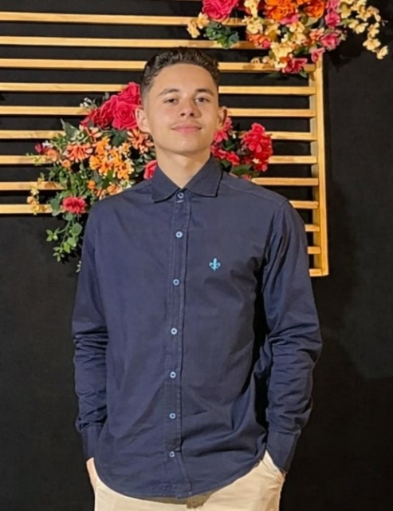

Uma vivência diferenciada

Fala tropa! Sou Nícolas Caparelli. Minha história é construída pela curiosidade constante. Acredito que a vida é um equilíbrio entre o que construímos externamente e o que cultivamos internamente. Aqui você encontrará um pouco da minha essência, das minhas paixões e do que me motiva a acordar todos os dias.
Sempre gosto de sair com os colegas pra fazer alguma várzea ou seja lá o que for.
Uma das coisas que eu gosto de fazer quando tenho tempo (e dinheiro), é trabalhar ou fazer acampamentos e retiros da igreja.
Alguns diriam que é minha segunda casa, mas de fato acho que uma das coisas mais legais da minha rotina é esse negócio.
Sou um católico de berço, mas considero que minha conversão veio a só alguns anos, e desde então tamo na luta ai em busca da santidade.
Em 2025, reparei que tinha muito tempo livre, então decidi entregar esse tempo à pastoral dos coroinhas e servir a Deus como mais um de seus servos no altar.
Sempre que posso gosto de refletir e escutar pregações que ajudam a melhorar o meu espiritual, afinal se eu não tiver fé, como vou transmitir isso para os outros.
Definitivamente prefiro comidas salgadas. Prato preferido sem surpresa nenhuma é o churrascão de sábado, o de domingo é bom támbem, mas eu curto mais o de sábado.
Curto comédia, suspense e um pouco de distopia, pra mim o que importa é ter um bom plot no final. Se no meio da ação um casalzin se apaixonar fico feliz por eles, mas não curto filmes focados em romance meloso.
Azul e roxo.
Nota 10/10. Tem meu pai, minha mãe, meu irmão, minha irmã e tem eu também.
Esses caras que me colocaram no mundo, desde que me lembro moro na casa deles de graça, são muito parceiros.
Tem esses dois ai também que mora com a gente.
(foto feia da disgreta) Teve uma vez em um grupo de jovens que faltou cantor e eu tive que desenrolar, falaram que cantei tão bem que se eu cantasse de novo os outros iriam se sentir humilhados, então por humildade parei de cantar.
Sei lá quando que foi isso, mas achei uma foto de quando eu fiz um teatro da igreja. Mas eu lembro que mandei bem esse dia.
Ganhei meu primeiro oscar de ciências com 16 anos por fazer pó de café virar um copo.